BALBOA THEATER

NOW SHOWING

Balboa Theater located in Outer Richmond,
has a very cozy,
nostalgic atmosphere. It has so
many different trinkets ranging from arcade machines
to a giant prize wheel to a huge statue of a plastic cowboy.
The dominant colours are red and black, and all the signs
have very bold text. When you are about to walk into
one of two theaters, you can see an old-style title
of the
movie playing above their entrances.
✰✰✰✰
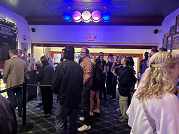
-
The theater had crazy random decorations like arcade games, a
giant prize wheel, and a giant cowboy sculpture in front of
the theater rooms, with a pretty large but narrow space that
gave off silly vibes while still feeling well established.
-
Offers small and large sizes for $7 and $8, respectively, with
a very classic movie theater popcorn taste that makes it the
“old reliable” out of the bunch of reviews.
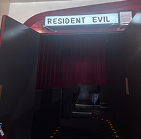
-
The theater was very spacious but super narrow, making for odd
seating since no one is really able to sit in the middle,
which I often prefer, with a decent but slightly smaller
screen, likely because they have two theater rooms, and
classic but slightly funky Art Deco decorations
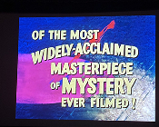
-
There were sooo many local ads, and I learned so much about
the surrounding area, with a lot of them looking student-made,
which was so cool to see on the big screen, although the ads
were super long at around 20ish minutes.
VOGUE THEATRE

NOW SHOWING

The Vogue Theatre, located in Presidio Heights,
has only
one theater, but the size is quite large.
Of all the places reviewed, this theater has the largest
theater room. They decorate their lobby for the season,
but their normal architecture is quite traditional,
with a somewhat orchestra-style building feel.
It's part of the nonprofit Cinemasfbay, just like Balboa,
and has the most traditional theater seating
arrangement out of the reviews.
✰✰✰✰✰
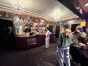
-
The theater had handmade decorations that gave it a very
youthful vibe, with a medium-sized space that was not too
small or too big, and a very homey feeling that made the lobby
feel like a warm hug.
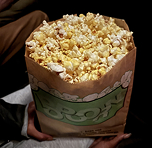
-
The small was $7 and the large was $8, which seemed like the
standard price, and the popcorn tasted kind of healthy, which
I actually really enjoyed because it felt different yet
similar to this coconut oil popcorn I like!
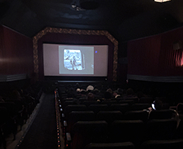
-
The theater had one room with a very nicely sized screen,
plenty of seating options, and seats that were not too close
together, while the inside was gorgeous and almost reminiscent
of an orchestral hall.
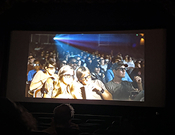
-
The ads were not super local and focused more on films they
were showing rather than businesses around, feeling like ads
you would see at an AMC, except they featured older movies,
which was quite cool, and ran for around 15 minutes.
ROXIE THEATER

NOW SHOWING

The Roxie, opened in 1913, has gone by many names,
from The Poppy to New 16th Street to Rex to Gem
and now
the Roxie! It’s the oldest continuously operating
theater
in San Francisco! There is only one screen
and the venue
is quite small, but to make up for that,
if you walk just a couple steps outside, you’ll see another
building that’s a smaller version of the Roxie
that has an additional screen!
✰✰✰ 1/2
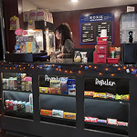
-
The ticket box outside gave off an older, classic movie
experience, and although the lobby was very small, it had a
lot of personality with fun little film trinkets on the side,
while the cozy vibes and tons of people filling up the space
made me even more excited for the movie.
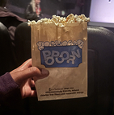
-
Offers a $6 small bag and a wider $8 large bag, with a highly
bland initial taste that improves as you continue eating,
little salt and butter, but nice crunch variation.
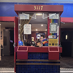
-
This theater was a solid, medium-sized space with only one
screen, making it feel pretty intimate, which I wasn’t
complaining about because seeing a thriller surrounded by
people experiencing it just like you made for a magical and
warm experience; the screen was relatively large, and the
decorations were classic, nothing very notable.
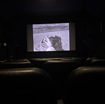
-
Features a mix of local business promos, movie trailers,
nostalgic theater etiquette infomercials, and a live host film
introduction, running for exactly 10 minutes, making it the
shortest ad runtime out of the reviewed theaters and starting
the movie right at 8:10!
HONORABLE MENTION
PEEPHOLE CINEMA

The Peephole Cinema is a public art installation
in an alley on the front of a house. It features a small
peephole that has films playing 24 hours a day, rotating
films by different artists, all curated (and including)
by Laurie O'Brien. The project started in 2013 and
is still loved by many and can actively
be found in the Mission.
✰✰✰✰✰